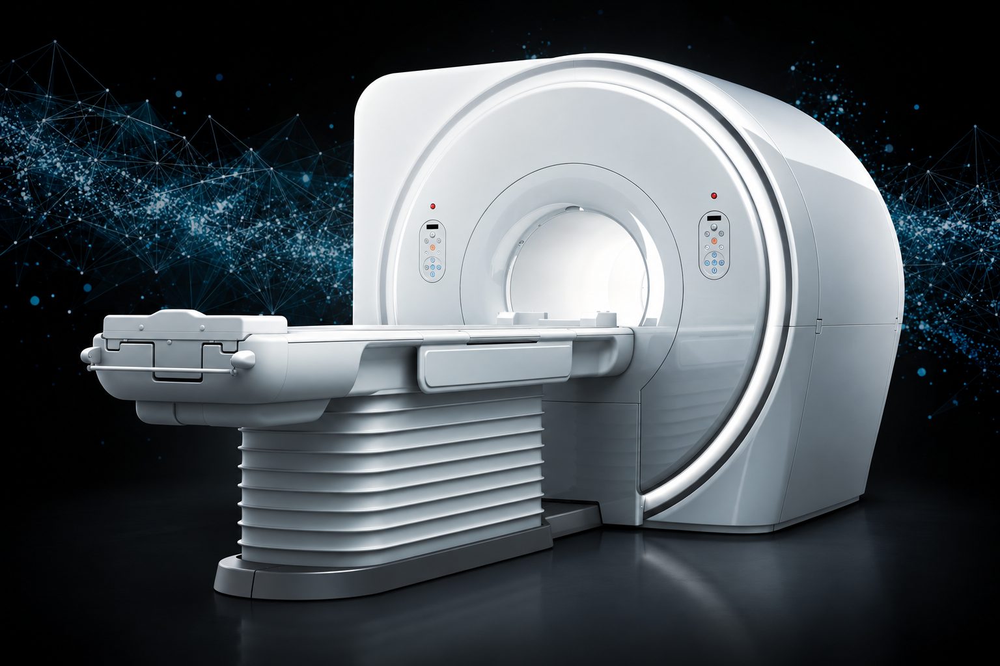
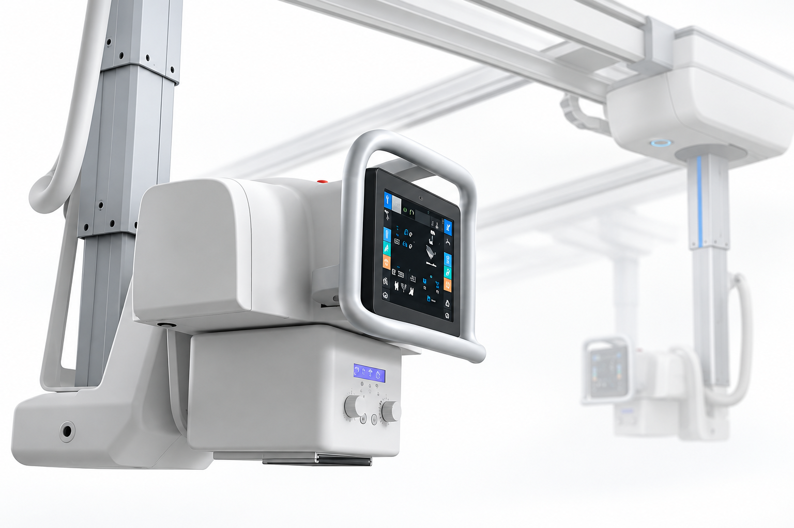
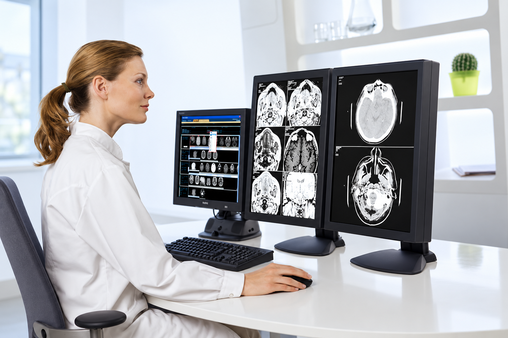

YOUR LEARNING SPACE
授業の復習も、国家試験の準備も。自分のペースで、何度でも取り組めます。
カードを選んで、問題集へ進みましょう。

基礎から臨床まで
核磁気共鳴の基礎から臨床MRIまで。テーマごとに、授業で学んだ知識を確認しましょう。

国家試験に向けて
X線管・高電圧装置、CR／FPD、X線CT、法令・JISなど。分野別に復習できます。

1年生向け
まずは頭部の基礎から。画像と解剖のつながりを、一問ずつ確認していきましょう。
2年生向け
放射線治療、核医学、X線画像技術・基礎医学、医療安全・放射線安全管理を学びます。